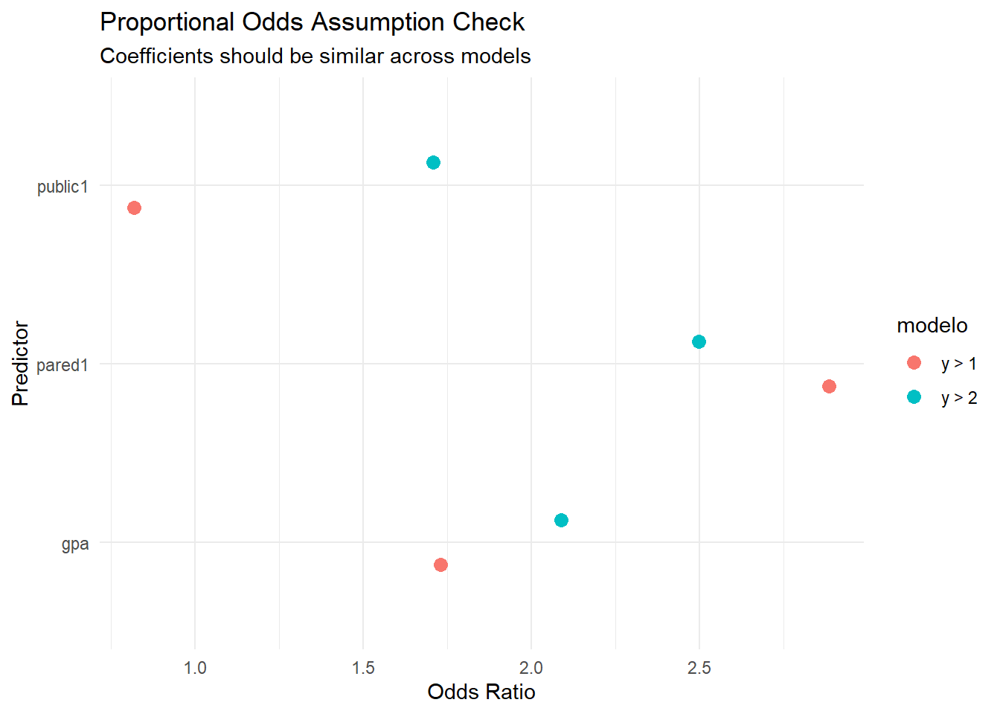
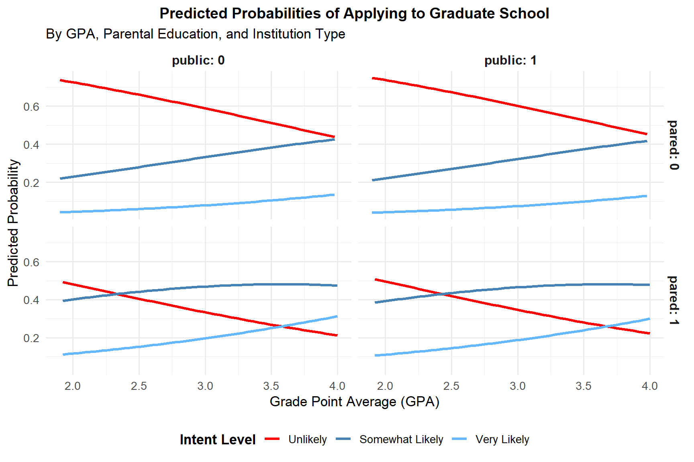
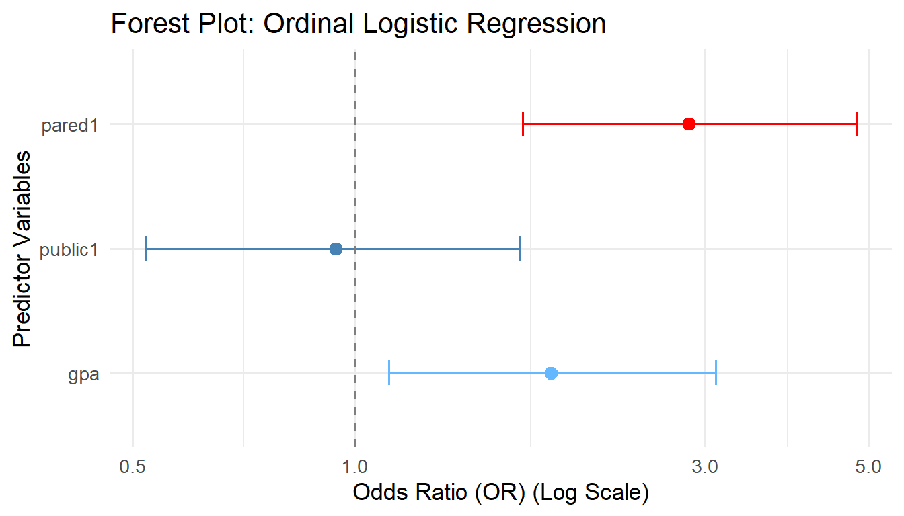

# Load required libraries
library(MASS) # Required for polr() function
library(ggplot2)
library(dplyr)
library(tidyr)
library(tibble)
library(reshape2)
library(foreign)
# Load the dataset
dat <- read.dta("https://stats.idre.ucla.edu/stat/data/ologit.dta")Data Lab: Ordered Logistic Regression
In this practical lab, we will analyze data using an Ordinal Logistic Regression (Proportional Odds Model). We will fit the model, interpret the odds ratios, verify the proportional odds assumption, and visualize predicted probabilities.
1. Data Loading and Preparation
We’ll load the UCLA ordinal dataset, which studies students’ intent to apply to graduate school.
WarningFixing Factor Contrasts
When importing Stata .dta files, categorical variables are sometimes parsed as ordered factors. When R runs regressions on ordered factors, it automatically uses orthogonal polynomial contrasts, leading to .L (linear) and .Q (quadratic) suffixes in the output parameters which are hard to interpret.
To fix this, we explicitly convert our predictors to standard, unordered factors.
# Convert predictors to standard unordered factors to prevent .L and .Q contrasts
dat$pared <- factor(dat$pared, ordered = FALSE)
dat$public <- factor(dat$public, ordered = FALSE)
# Inspect the structure of the dataset
summary(dat) apply pared public gpa
unlikely :220 0:337 0:343 Min. :1.900
somewhat likely:140 1: 63 1: 57 1st Qu.:2.720
very likely : 40 Median :2.990
Mean :2.999
3rd Qu.:3.270
Max. :4.000 # Verify the ordinal nature of the dependent variable
str(dat$apply) Factor w/ 3 levels "unlikely","somewhat likely",..: 3 2 1 2 2 1 2 2 1 2 ...# Generate a cross-tabulation
xtabs(~apply + pared, data = dat) pared
apply 0 1
unlikely 200 20
somewhat likely 110 30
very likely 27 13xtabs(~apply + public, data = dat) public
apply 0 1
unlikely 189 31
somewhat likely 124 16
very likely 30 102. Model Fitting
We estimate the Proportional Odds Logistic Regression model using polr.
# Estimate the model
m <- polr(apply ~ pared + public + gpa, data = dat, Hess = TRUE)
# View model summary
summary(m)Call:
polr(formula = apply ~ pared + public + gpa, data = dat, Hess = TRUE)
Coefficients:
Value Std. Error t value
pared1 1.04769 0.2658 3.9418
public1 -0.05879 0.2979 -0.1974
gpa 0.61594 0.2606 2.3632
Intercepts:
Value Std. Error t value
unlikely|somewhat likely 2.2039 0.7795 2.8272
somewhat likely|very likely 4.2994 0.8043 5.3453
Residual Deviance: 717.0249
AIC: 727.0249 2.1 Significance Testing
polr does not provide p-values by default, so we calculate them using the t-values and the normal distribution.
# Calculate p-values
ctable <- coef(summary(m))
p <- pnorm(abs(ctable[, "t value"]), lower.tail = FALSE) * 2
ctable <- cbind(ctable, "p value" = p)
print(round(ctable, 3)) Value Std. Error t value p value
pared1 1.048 0.266 3.942 0.000
public1 -0.059 0.298 -0.197 0.844
gpa 0.616 0.261 2.363 0.018
unlikely|somewhat likely 2.204 0.780 2.827 0.005
somewhat likely|very likely 4.299 0.804 5.345 0.0002.2 Interpretation with Odds Ratios
We transform log-odds to Odds Ratios (OR) and compute 95% confidence intervals.
ci <- confint(m)Waiting for profiling to be done...OR <- exp(coef(m))
ci_exp <- exp(ci)
# Prepare data for Forest Plot visualization
df_plot <- tibble(
variable = rownames(ci_exp),
OR = OR,
lower = ci_exp[, 1],
upper = ci_exp[, 2],
color = c("red", "steelblue", "steelblue1") # Custom colors for variables
)
df_plot$variable <- factor(df_plot$variable, levels = rev(df_plot$variable))
print(df_plot)# A tibble: 3 × 5
variable OR lower upper color
<fct> <dbl> <dbl> <dbl> <chr>
1 pared1 2.85 1.70 4.82 red
2 public1 0.943 0.521 1.68 steelblue
3 gpa 1.85 1.11 3.10 steelblue13. Diagnostic: Proportional Odds Assumption
A key assumption of the ordinal model is that the relationship between each pair of outcome groups is the same (Parallel Slopes). We test this by comparing binary logits for different thresholds.
dat$y_gt1 <- as.numeric(dat$apply != "unlikely") # unlikely vs (somewhat + very)
dat$y_gt2 <- as.numeric(dat$apply == "very likely") # (unlikely + somewhat) vs very
m1 <- glm(y_gt1 ~ pared + public + gpa, data = dat, family = binomial)
m2 <- glm(y_gt2 ~ pared + public + gpa, data = dat, family = binomial)
# Compare coefficients
df1 <- tibble(modelo = "y > 1", variable = names(coef(m1)), OR = exp(coef(m1)))
df2 <- tibble(modelo = "y > 2", variable = names(coef(m2)), OR = exp(coef(m2)))
bind_rows(df1, df2) %>%
filter(variable != "(Intercept)") %>%
ggplot(aes(x = OR, y = variable, color = modelo)) +
geom_point(position = position_dodge(width = 0.5), size = 3) +
labs(title = "Proportional Odds Assumption Check",
subtitle = "Coefficients should be similar across models",
x = "Odds Ratio", y = "Predictor") +
theme_minimal()
4. Predictions and Visualizations
We simulate a grid of values to visualize the model’s predicted probabilities across GPA ranges.
# Create a simulation grid
newdat <- data.frame(
pared = factor(rep(0:1, 200), ordered = FALSE),
public = factor(rep(0:1, each = 200), ordered = FALSE),
gpa = rep(seq(from = 1.9, to = 4, length.out = 100), 4)
)
# Predict probabilities
newdat <- cbind(newdat, predict(m, newdat, type = "probs"))
# Reshape data to long format
lnewdat <- melt(newdat, id.vars = c("pared", "public", "gpa"),
variable.name = "Level", value.name = "Probability")
lnewdat$Level <- factor(lnewdat$Level,
levels = c("unlikely", "somewhat likely", "very likely"),
labels = c("Unlikely", "Somewhat Likely", "Very Likely"))
# Plot the curves
ggplot(lnewdat, aes(x = gpa, y = Probability, colour = Level)) +
geom_line(size = 1.2) +
facet_grid(pared ~ public, labeller = label_both) +
scale_color_manual(values = c("Unlikely" = "red",
"Somewhat Likely" = "steelblue",
"Very Likely" = "steelblue1")) +
labs(
x = "Grade Point Average (GPA)",
y = "Predicted Probability",
colour = "Intent Level",
title = "Predicted Probabilities of Applying to Graduate School",
subtitle = "By GPA, Parental Education, and Institution Type"
) +
theme_minimal(base_size = 13) +
theme(
strip.text = element_text(face = "bold", size = 12),
legend.position = "bottom",
legend.title = element_text(face = "bold"),
plot.title = element_text(face = "bold", size = 14, hjust = 0.5)
)Warning: Using `size` aesthetic for lines was deprecated in ggplot2 3.4.0.
ℹ Please use `linewidth` instead.
5. Forest Plot
ggplot(df_plot, aes(x = OR, y = variable)) +
geom_point(aes(color = color), size = 3) +
geom_errorbarh(aes(xmin = lower, xmax = upper, color = color), height = 0.2) +
geom_vline(xintercept = 1, linetype = "dashed", color = "gray50") +
scale_x_log10() +
scale_color_identity() +
labs(
x = "Odds Ratio (OR) (Log Scale)",
y = "Predictor Variables",
title = "Forest Plot: Ordinal Logistic Regression"
) +
theme_minimal(base_size = 13)Warning: `geom_errobarh()` was deprecated in ggplot2 4.0.0.
ℹ Please use the `orientation` argument of `geom_errorbar()` instead.`height` was translated to `width`.
TipCross-References
- Return to Topics overview